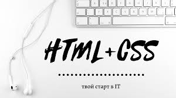
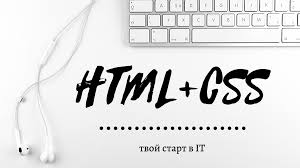

CSS — формальный язык описания внешнего вида документа, написанного с использованием языка разметки.
Преимущественно
используется как средство описания, оформления внешнего вида веб-страниц, написанных
с помощью языков разметки HTML и XHTML, но может
также применяться к любым XML-документам, например, к SVG или XUL
Для того чтобы понять какая же между CSS и HTML разница, необходимо разобраться, что же такое CSS, а что такое HTML.
В переводе с английского CSS означает «Каскадные таблицы стилей». CSS является технологией
управления дизайном веб-страницы, он предоставляет множество возможностей для описания внешнего
вида страницы, также позволяет значительно упростить вид HTML
страницы с помощью переноса оформления для элементов страницы в CSS файл. CSS дает возможность использования одного оформления для
неограниченного количества элементов HTML страниц. Это позволяет на всех страницах, которые
используют один класс для оформления, изменять оформление на всех страницах сайта, изменив его 1 раз в CSS файле, это очень удобно, если на сайте
больше 50 страниц, не нужно в каждой из них изменять оформление элемента.
Что же такое HTML? В
переводе с английского HTML означает «Язык разметки гипертекста». HTML является стандартным языком разметки
HTML документов. Язык разметки гипертекста используется непосредственно для структурирования содержимого HTML страницы. С его
помощью можно создавать таблицы, оформлять их, создавать оформление
для текстов и гипертекстовые документы.
HTML страницы без использования CSS становятся сложными и запутанными, так как оформление для каждого элемента прописывается заново, что значительного увеличивает объем текста. Например, есть HTML
страница, на которой размещено 3 части текста, которые необходимо оформить одинаково
(размер, цвет), но использовать HTML теги для оформления всех трех сразу не получается, так как эти фрагменты
находятся в разных местах HTML страницы. Для оформления таких текстов будет необходимо
использовать код каждый раз, для каждого фрагмента в отдельности.
При использовании же CSS, мы один раз создадим
оформление для класса, а потом в коде HTML-страницы просто пропишем этот
класс каждому из трех фрагментов. Теперь HTML код теперь выглядит менее объемно, не так ли? Изменив лишь один элемент CSS,
мы можем поменять оформление сразу всех страниц сайта. А этих страниц могут быть тысячи.

.jpg) 

>© 2006–2020 Куцан Георгий, по всем вопросам пишите по адресу xieannm@gmail.com
Номера телефонов:+380988604950.Пожалуйста оцените мой сайт,и пришлите свое мнение мне на почту!Заранее спасибо.